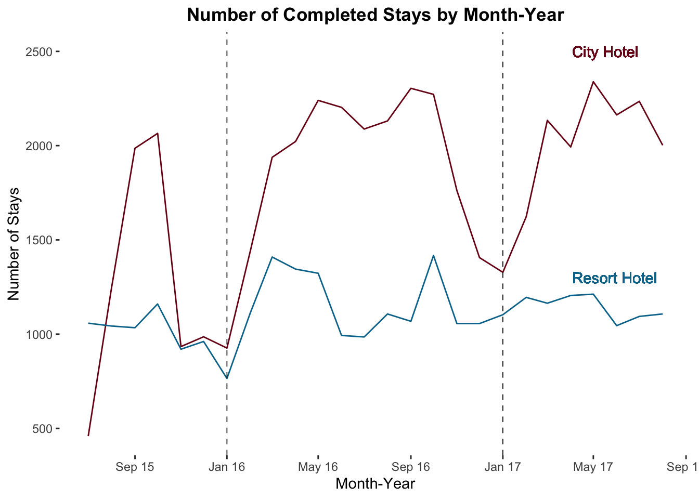

7 Data and Chart Types

7.1 Types of Data
Variables can contain different types of data. These different data types will dictate both what types of analysis are appropriate and what chart types can best help us understand.
The chart below this shows the different types of data you may commonly encounter. This taxonomy is frequently used and was originally published by Stanley Stephens in Science in 1946. It is useful but not perfect.
7.1.1 Categorical Data
A variable that contains names or categories is referred to as categorical data. Categorical data is always discrete.
7.1.1.1 Nominal
Nominal data is called that because one definition of nominal is, “of or relating to a name.” The easiest example of nominal data is a people’s names! The key is that there is no inherent order to this data. Other examples include colors, music genres, movie titles, country names, etc.
We can count and categorize nominal data, but we can’t really do mathematical transformations on it. How do you “average” green and purple shirts? Brown?
7.1.1.2 Ordinal
Ordinal data has some order to it but is still categorical. Examples include: ratings from dissatisfied to satisfied, level of education (no high school diploma, high school, some college, associate’s degree, bachelor’s degree, graduate degree).
We can count and take the median, but we can’t “average” ordinal data. If we have a customer who is satisfied and one who is not satisfied, the “average” isn’t “somewhat satisfied.” There can also be big differences in the “distance” between categories. There’s a big difference between a high school diploma and a bachelor’s degree, but not as much difference between a bachelor’s degree and a master’s degree.
Note: You will often see ordinal data represented by numbers (e.g. 1-5 on a Likert scale). This data is often analyzed with statistical techniques such as taking the mean or using regression, but it’s not without controversy. For most things, it’s probably okay to transform well-designed survey data and analyze it using the mean. SS Stevens points out:
[F]or this ‘illegal’ statisticizing there can be invoked a kind of pragmatic sanction: In numerous instances it leads to fruitful results. While the outlawing of this procedure would probably serve no good purpose, it is proper to point out that means and standard deviations computed on an ordinal scale are in error to the extent that the successive intervals on the scale are unequal in size. When only the rank-order of data is known, we should proceed cautiously with our statistics, and especially with the conclusions we draw from them.
“On the Theory of Scales of Measurement.” Science. 1946. Vol 103, No 2684, pg 679
7.1.2 Numerical Data
7.1.2.1 Discrete vs. Continuous
Numerical data can be either continuous or discrete (sometimes you’ll see people argue that numerical data is all continuous; I disagree). Discrete data can only hold certain values. For example, the number of customers who shop in a store, or the number of students in a class. Continuous data can take any value in a range. For example, the time between two events.
We often approximate discrete events as continuous. For large samples, this can often be done without significant impacts. We also convert continuous variables, like income ($48,769), to discrete scales ($30-$50K).
7.1.2.2 Interval
Interval data has an inherent order and the difference between every unit on an interval scale must be the same. However, there is no true zero.
One example is time. The difference between any two intervals on the time scale (e.g. in minutes) is the same, but there’s no zero. Another example is credit scores, which range from 300-850. Finally, Chess player rankings range from 100-3000.
You cannot multiply or divide interval data (which means you can’t take percentages)! A 1500-ranked chess player isn’t “twice as good” as a 750-ranked player.
7.1.2.3 Ratio
Ratio data shares all the characteristics of interval data (ordered values on an equidistant scale) but has a true zero. Revenue, number of acorns, age, height of a building, etc are all ratio values.
7.1.2.4 Measurement Error and Data Limitations
Context and measurement matters. On the stock markets, trades can be made for fractions of a penny, but when you make a purchase in the store it will be rounded to the nearest penny when tax is calculated (Here’s the Minnesota state law specifying how that’s done).
Note any limitations of your instruments or of how the measurements are collected. You may have seen the HBO miniseries Chernobyl. Initial estimates were that the radiation levels were 3.6 Roentgen/hr; but the available dosimeters never anticipated such a disaster this was the highest dose they could measure. The true dose was 15,000 R/h. Anytime you see a “cliff” in your data, ask why.
7.1.3 Tricky Cases
It’s important to think through what the data type is because it can affect how you do your analysis. Consider day of the week. We can cross out ratio, because there is no zero-day. There IS a sort of order to them, but does the week start on Sunday or Monday? Does it matter if we just have one week’s worth of data (then we kind of DO have a zero, so maybe DoW represents time)?
The bottom line is that you need to think it through. Does your analysis make sense?
7.1.4 Calculations Possible by Data Type
Different data types allow different types of calculations. Ask yourself, “Is this meaningful in the real world?” Note that your software won’t usually prevent you from attempting to do something “illegal” like average the values of a nominal variable.
7.2 Chart types
Let’s walk through a few chart types. Note that you often only need to determine the first level in the data type hierarchy (categorical vs. numerical) to determine which type of chart might be best. There dozens of different plot types and variations that have been developed for the ggplot package, and even more in other software packages, but this core set of chart types is a good starting point.
Note: To keep things a little more organized, I’m not going to be showing all of the code used to generate these plots.
7.2.1 Distribution Plots
We should always assess the distribution of a numerical variable, look at the dispersion, and check for outliers. Of course, it’s always good to start with a table. Let’s look at the mean and median of the Average Daily Rate (price) charged by the two different hotels in the hotelbookings dataset.
bookingdata %>%
group_by(hotel) %>%
summarise(`Mean ADR` = dollar(mean(adr)),
`Median ADR` = dollar(median(adr))) %>%
rename(Hotel = hotel) %>%
kable()| Hotel | Mean ADR | Median ADR |
|---|---|---|
| City Hotel | $105.30 | $99.90 |
| Resort Hotel | $94.95 | $75 |
7.2.1.1 Histogram
Histograms allow you to assess the distribution of a numerical variable. Histograms display the frequency (count) or proportion (percentage) of observations in each bin. While you can put more than one group on a histogram (and have two colors of bars) histograms seem to work best when there is just one group.
### Create a Histogram
bookingdata %>%
filter(adr<1000) %>%
ggplot(aes(adr)) +
geom_histogram(fill = "#00759a", binwidth = 10) +
scale_x_continuous(labels=scales::dollar_format())+
labs(x = "Average Daily Rate ($)",
y = addline_format("Frequency /(Count of Bookings)"),
title = addline_format("Histogram: Distribution of One Numerical Variable
/(Price of Hotel Rooms)")) +
theme(axis.line = element_line(color = "black"),
axis.title.y = element_text(angle = 0, vjust = 0.5),
panel.background=element_blank(),
panel.grid.minor=element_blank(),
panel.grid.major.y=element_blank(),
panel.grid.major.x=element_blank())
The distribution above shows a peak but is skewed right. (This histogram is a distribution of prices, which makes sense…we see a distribution that looks “normal” but does show a small number of very expensive hotel rooms.) What’s interesting on this histogram? How about that spike at $0? Those are rooms given away for free (complementary) for whatever reason!
One critical decision with histograms is the “bin width” and the number of bins. In ggplot you can either specify bin = n to get n bins (bars) or you can specify binwidth = w to have each bin (bar) cover a range of w. In the example above, I set binwidth = 10 so that each bar covers $10 (ie, prices $0-$10 go in the first bin, $10-$20 in the second, and so on).
What’s the right number of bins? Imagine we have prices…how many observations do you group together? Should a bin cover a $5 range of prices or $50 range? If you have too many or too few bins, you’ll have a hard time seeing any patterns. Here’s the same histogram as above but with a bin width of $200 and $0.25.

7.2.1.2 Density Plot
Density plots are something you’ve seen frequently, though you may not realize it. The common representation of a standard normal distribution is a density plot! It shows the “density” of a variable over its distribution.
Density plots are constructed using a kernel (function) density estimator to estimate the probability of an observation landing at any particular spot on the distribution. You can think of a density plot as a “smoothed” histogram. The figure below on the right shows the same density plot with an overlaid histogram of the same data.
### Create a density plot of the standard normal distribution
# First, construct a dataset of 10000 draws from the standard normal
data <- tibble(x_values = rnorm(10000, mean = 0, sd = 1))
# Create a density plot
densityplot <- data %>%
ggplot(aes(x = x_values)) +
geom_density(fill = "#00759a", color = "#ffffff") +
labs(x = "X",
y = "Density of X",
title = addline_format("Density Plot: Distribution of One
/Numeric Variable")) +
theme(axis.line = element_line(color="black"),
panel.background=element_blank(),
panel.grid.minor=element_blank(),
panel.grid.major.y=element_blank(),
panel.grid.major.x=element_blank(),
axis.text.x = element_blank(),
axis.ticks = element_blank(),
axis.text.y = element_blank())
# Create the density plot but overlay it with a histogram
densityplot_w_histogram <- data %>%
ggplot(aes(x = x_values)) +
geom_density(fill = "grey70", color = "#ffffff") +
geom_histogram(aes(y=..density..), # Plot density instead of count
bins = 20,
color = "#00759a",
alpha = 0.1) +
labs(x = "X",
y = "Density of X",
title = addline_format("Density Plot with/ Histogram Overlay")) +
theme(axis.line = element_line(color="black"),
panel.background=element_blank(),
panel.grid.minor=element_blank(),
panel.grid.major.y=element_blank(),
panel.grid.major.x=element_blank(),
axis.text.x = element_blank(),
axis.ticks = element_blank(),
axis.text.y = element_blank())
# Print out both plots next to one another as one figure
grid.arrange(densityplot, densityplot_w_histogram, nrow = 1)
Density plots are particularly useful for comparing distributions (generally better than putting two histograms on the same plot). This allows us to compare the skewness, outliers, and peaks of two different groups.
Let’s look at the distribution of prices charged at the two different hotels (City Hotel and Resort Hotel) in our bookingdata dataset. Are the prices different? We see that the City Hotel charges higher prices to more of it’s customers, but there is a “bigger tail” on the Resort Hotel prices. And we can see that the City Hotel provides more complementary hotel rooms (where price is near $0). Interesting!
bookingdata %>%
filter(adr < 1000) %>% #Filter out the error(?) of adr = $5400
ggplot(aes(x = adr, fill = hotel)) +
geom_density(color = "white",
alpha = 0.9) +
scale_fill_manual(values = c("#00759a", "grey80")) +
scale_x_continuous(labels = scales::dollar_format()) +
labs(x = "Average Daily Rate (Price)",
y = "Density",
title = addline_format("Density Plot: Average Daily Rate (Price) for Two Hotels"),
fill = "Hotel") +
theme(axis.line = element_line(color="black"),
panel.background=element_blank(),
panel.grid.minor=element_blank(),
panel.grid.major.y=element_blank(),
panel.grid.major.x=element_blank())
7.2.1.3 Box Plot
Box Plots allow you to compare multiple distributions. Let’s look at the anatomy of a boxplot:
Median is the center line (the middle datapoint)
1st Quartile line represents the 25th percentile (25% of the data is below that, 75% is above that)
3rd Quartile line is the 75th percentile
IQR is the range between the 1st and 3rd Quartile
The “whiskers” usually extend 1.5*IQR beyond the box
Points beyond the whiskers are denoted with points/dots and are outliers
Let’s look at a box plot to compare the distribution of the Average Daily Rate (adr) charged at the two hotels.
bookingdata %>%
filter(adr<1000) %>%
ggplot(aes(x = hotel, y = adr)) +
geom_boxplot(color = "black", fill = "#00759a", alpha = 0.8) +
scale_y_continuous(labels = scales::dollar_format())+
labs(title = addline_format("Boxplot: Compare Distribution One Numeric Variable Across Groups /(Distribution of Price Between Hotels)"),
x = "Hotel",
y = "Avg Daily Rate ($)")+
theme(axis.line = element_line(color="black"),
panel.background=element_blank(),
panel.grid.minor=element_blank(),
panel.grid.major.y=element_blank(),
panel.grid.major.x=element_blank())
7.2.2 Bar Chart
One critical consideration is to ensure that the Y axis starts at zero for bar charts. It can be very misleading to present a bar graph that doesn’t start at zero because the magnitude of the difference isn’t the same as the total magnitude represented. In fact, geom_bar in ggplot won’t even let you start the Y axis anywhere else…to create the figure on the left I had to “brute force” it with geom_rect.

7.2.3 Line Graphs
Line graphs are ideal when you want to show trends or show the relationship between two categorical variables. For the next few examples, we’ll switch away from our hotel_bookings.csv data and look at another real dataset of purchase card transactions made by employees of the City of San Jose, CA, USA.
### Make a line graph of total transactions by month
# Read in transaction data
PCard <- read_rds("SanJosePCardTransactions")
# Summarize the data and feed it to ggplot
PCard %>%
group_by(Year, Month) %>%
summarize(date = min(Date), Count = n()) %>%
ggplot(aes(x = date, y = Count)) +
geom_line(color = "#7a0019") +
labs(x = "Month",
y = "Total Transactions",
title = "Number of Purchase Card Transactions by Month") +
scale_x_date(date_labels = "%b %y", date_breaks = "6 months") +
theme(plot.title = element_text(hjust=0.5, face="bold"),
plot.background=element_rect(fill="#ffffff"),
panel.background=element_rect(fill="#f9f5eb"),
panel.grid.minor=element_blank(),
panel.grid.major.y=element_blank(),
panel.grid.major.x=element_line(),
axis.ticks.length = unit(.25, "cm"))
Sometimes you might want to plot multiple lines on a plot. There’s one employee who has far more transactions than anyone else.
### Analyze total number of transactions by month
# Create a dataframe with transactions by each employee by month
# only looking at employees who had a month with at least 50 transctions
PCard %>%
group_by(CardholderName, Year, Month) %>%
summarize(date = min(Date), Count = n()) %>%
filter(max(Count)>60) %>%
ggplot(aes(x = date, y = Count, color = CardholderName)) +
geom_line() +
labs(x = "Month",
y = "Total Transactions",
title = "Number of Purchase Card Transactions by Month by Employee") +
scale_color_manual(values = c("grey50", "grey50", "grey50", "grey50", "#7a0019", "grey50", "grey50", "grey50", "grey50", "grey50", "grey50")) +
scale_x_date(date_labels = "%b %y", date_breaks = "6 months") +
theme(plot.title = element_text(hjust=0.5, face="bold"),
plot.background=element_rect(fill="#ffffff"),
panel.background=element_rect(fill="#f9f5eb"),
panel.grid.minor=element_blank(),
panel.grid.major.y=element_blank(),
panel.grid.major.x=element_line(),
axis.ticks.length = unit(.25, "cm"),
legend.position = "none")
Who is this and what department do they work for? Let’s make a quick table, looking at the top ten people by the number of purchase card transactions they’ve made.
library(knitr)
PCard %>%
group_by(CardholderName, Department) %>%
summarize(Transactions = n(), MeanAmount = round(mean(Amount), 2)) %>%
arrange(-Transactions) %>%
head(n=5) %>%
kable(col.names = c("Cardholder Name", "Department", "Total Transactions", "Mean Amount"))| Cardholder Name | Department | Total Transactions | Mean Amount |
|---|---|---|---|
| MARCIA ROUVELL | LIBRARY | 2929 | 5.67 |
| TINA YU TAYLOR | ENVIRONMENTAL SERVICES | 1663 | 311.43 |
| ALBERT RODRIGUEZ | PARKS AND REC | 1596 | 251.57 |
| JULIE CHIOU | CITY MANAGER | 1314 | 278.42 |
| MICHELLE KAHIHIKOLO | FIRE | 1305 | 427.99 |
If you dig into the data, we see that there were a large number of small dollar transactions for postage purchased by this employee.